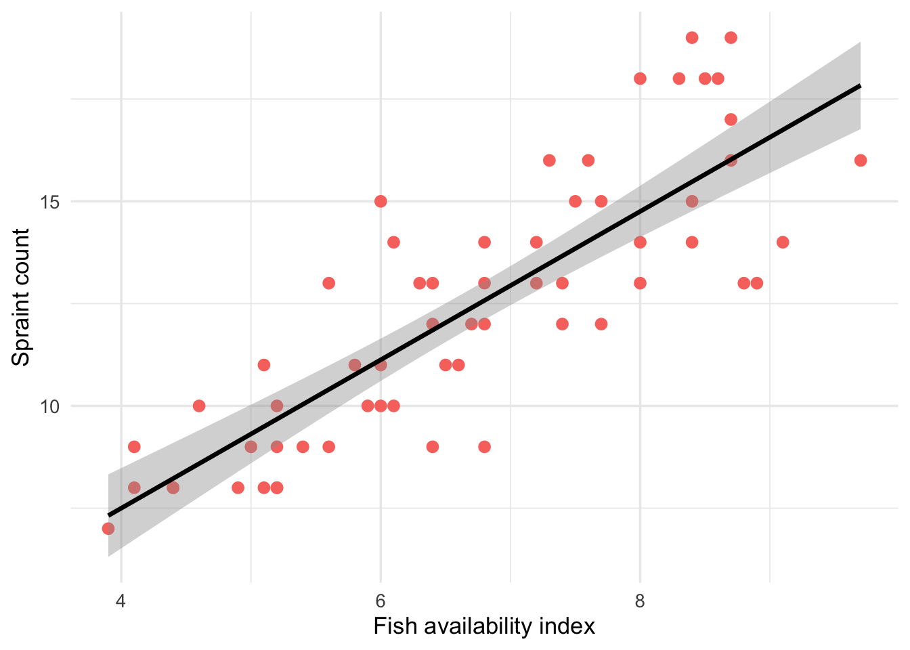
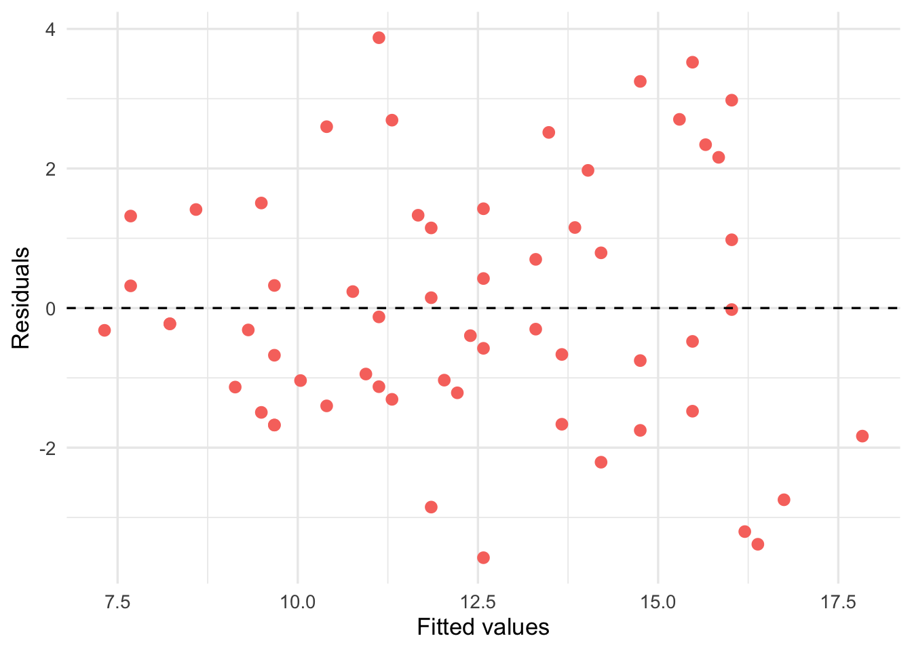

5 Workshop 5 - Testing and Measuring Relationships Extension
5.1 The Route to Today’s Workshop
5.2 Understanding Our Terms and Definitions
Correlation Analysis A statistical method used to measure the strength and direction of a relationship between two or more variables.
Regression Analysis A statistical method used to estimate the relationship between a dependent outcome variable and one or more independent predictor variables.
Positive Association As one variable increases, the other variable also increases.
Negative Association As one variable increases, the other variable decreases.
5.3 Linear Regression
5.3.1 What is Linear Regression?
So far we have compared means between groups using t-tests and ANOVA. But what if we want to understand the relationship between two continuous variables?
A continuous variable is a variable that can take any value within a range, it is measured rather than counted. Examples from our otter dataset include:
- Body length (e.g. 115.3 cm)
- Body mass (e.g. 9.52 kg)
- Fish availability index (e.g. 6.7)
- Spraint count (e.g. 12)
This is different from a categorical variable (such as site or sex), which takes a fixed number of distinct values. In linear regression, the dependent variable (y) must be continuous. The independent variable (x) is typically continuous too, though categorical variables can also be used in more advanced models.
In our otter survey, we might ask:
“Does fish availability predict how many spraints an otter leaves?”
This is a question about a relationship between two variables, as fish availability increases, do spraints increase too? Linear regression allows us to answer this.
5.3.2 The Three Steps of Linear Regression
Step 1: Test whether a relationship exists
We plot the data and fit a straight line, then test whether the slope is significantly different from zero.
If fish availability has no effect on spraints, the line would be completely flat (slope = 0), as fish availability increases, spraints do not change.
If fish availability does affect spraints, the line would slope upwards (positive relationship) or downwards (negative relationship).
The two plots below illustrate this using our otter data:
Fish availability (left): the line slopes clearly upward, suggesting that as fish availability increases, spraint count increases too. The points follow the line closely, suggesting a strong positive relationship.
Body length (right): the line is almost completely flat, and the points are scattered widely with no clear pattern. This suggests no meaningful relationship between body length and spraint count.
Looking at the fish availability plot, what does the slope of the line suggest?
Looking at the body length plot, what does the slope of the line suggest?
Comparing the two plots, which variable appears to be a better predictor of spraint count?
If the slope of the fish availability line was negative instead of positive, what would this mean biologically?
We test the slope formally using a t-test, which produces a p-value:
- If p < 0.05: the slope is significantly different from zero; we have evidence of a relationship
- If p > 0.05: we do not have enough evidence to conclude a relationship exists
In R, we fit the linear model using lm() and then use summary() to view the results:
lm_fish <- lm(spraints ~ fish_index, data = otter_data)
lm_length <- lm(spraints ~ length_cm, data = otter_data)summary(lm_fish)
Call:
lm(formula = spraints ~ fish_index, data = otter_data)
Residuals:
Min 1Q Median 3Q Max
-3.5767 -1.2375 -0.2637 1.3212 3.8737
Coefficients:
Estimate Std. Error t value Pr(>|t|)
(Intercept) 0.2483 1.0938 0.227 0.821
fish_index 1.8130 0.1596 11.358 2.25e-16 ***
---
Signif. codes: 0 '***' 0.001 '**' 0.01 '*' 0.05 '.' 0.1 ' ' 1
Residual standard error: 1.815 on 58 degrees of freedom
Multiple R-squared: 0.6898, Adjusted R-squared: 0.6845
F-statistic: 129 on 1 and 58 DF, p-value: 2.249e-16summary(lm_length)
Call:
lm(formula = spraints ~ length_cm, data = otter_data)
Residuals:
Min 1Q Median 3Q Max
-5.2072 -2.7089 0.0695 2.0684 6.9829
Coefficients:
Estimate Std. Error t value Pr(>|t|)
(Intercept) 16.85006 3.53021 4.773 1.27e-05 ***
length_cm -0.04225 0.03316 -1.274 0.208
---
Signif. codes: 0 '***' 0.001 '**' 0.01 '*' 0.05 '.' 0.1 ' ' 1
Residual standard error: 3.215 on 58 degrees of freedom
Multiple R-squared: 0.02723, Adjusted R-squared: 0.01046
F-statistic: 1.623 on 1 and 58 DF, p-value: 0.2077The Coefficients table in the output shows:
| Column | What it means |
|---|---|
Estimate |
The value of the slope or intercept |
Std. Error |
The uncertainty around that estimate |
t value |
How many standard errors the slope is from zero |
Pr(>|t|) |
The p-value: is the slope significantly different from zero? |
For fish index, the slope is significantly different from zero (p < 0.001), confirming a positive relationship with spraint count. For body length, the slope is not significantly different from zero (p = 0.207), confirming no meaningful relationship.
Where would you find the p-value for the slope in the summary() output?
If the t value for the slope is 8.45, what does this suggest?
Step 2: Assess the strength of the relationship
Even if a relationship exists, it might be weak, the data points might be scattered widely around the line. We measure how well the line fits the data using R² (R-squared):
R² is the proportion of variation in spraints that is explained by fish availability.
- R² = 1: the line fits the data perfectly
- R² = 0.6: fish availability explains 60% of the variation in spraints; other factors explain the remaining 40%
- R² = 0: the line explains nothing; fish availability has no predictive power
R² can be found in the summary() output under Multiple R-squared:
summary(lm_fish)$r.squared[1] 0.6898364summary(lm_length)$r.squared[1] 0.02722733If R² = 0.69 for the relationship between fish index and spraints, and R² = 0.027 for the relationship between body length and spraints, what does this mean?
Step 3: Describe the relationship
Finally, we describe the relationship using the regression equation:
y = a + bx
For our otter data:
\text{spraints} = a + b \times \text{fish index}
Where:
- y = spraints: the dependent variable (what we are trying to predict)
- x = fish index: the independent variable (what we think drives spraints)
- a = the intercept: the predicted number of spraints when fish index = 0
- b = the slope: how much spraints change for each one-unit increase in fish index
We can extract the slope and intercept directly from the model:
coef(lm_fish)(Intercept) fish_index
0.2482678 1.8130078 What does a slope of zero mean in a linear regression?
What does the intercept tell us in our otter regression?
In our otter model, what is the dependent variable?
Note
Important assumptions of linear regression:
- The relationship between the two variables is linear: a straight line is a reasonable description of the data
- The residuals (differences between observed and predicted values) are normally distributed
- The variance of the residuals is constant across all values of x: this is called homoscedasticity
We will check these assumptions in the next section.
5.4 Case Study: Otters
We should have already read in our data. We can start by checking the variable types:
Can you remember how to check the data type of each variable in R?
str() shows the structure of the dataset, including the data type of each variable:
str(otter_data)spc_tbl_ [60 × 9] (S3: spec_tbl_df/tbl_df/tbl/data.frame)
$ otter_id : chr [1:60] "OT001" "OT002" "OT003" "OT004" ...
$ site : chr [1:60] "River Bure" "River Bure" "River Bure" "River Bure" ...
$ season : chr [1:60] "summer" "summer" "summer" "summer" ...
$ sex : chr [1:60] "male" "male" "male" "female" ...
$ age_class : chr [1:60] "sub_adult" "sub_adult" "juvenile" "juvenile" ...
$ length_cm : num [1:60] 120.2 127.6 116.9 88.6 110.6 ...
$ mass_kg : num [1:60] 11.33 10.42 7.2 5.23 9.63 ...
$ spraints : num [1:60] 13 14 11 15 13 15 12 13 12 16 ...
$ fish_index: num [1:60] 6.3 6.1 5.1 7.7 5.6 6 6.7 6.4 6.8 7.3 ...
- attr(*, "spec")=
.. cols(
.. otter_id = col_character(),
.. site = col_character(),
.. season = col_character(),
.. sex = col_character(),
.. age_class = col_character(),
.. length_cm = col_double(),
.. mass_kg = col_double(),
.. spraints = col_double(),
.. fish_index = col_double()
.. )
- attr(*, "problems")=<pointer: 0x7a2d21980> | Data type shown | What it means | Variable type |
|---|---|---|
chr |
Character: text values | Nominal categorical |
Factor |
Factor: categorical with levels | Nominal or ordinal categorical |
int |
Integer: whole numbers | Discrete quantitative |
num |
Numeric: decimal numbers | Continuous quantitative |
So for our otter dataset:
siteandsexshow aschr: nominal categoricalspraintsshows asint: discrete quantitativefish_index,length_cm,mass_kgshow asnum: continuous quantitative
5.4.1 What Should We Analyse?
In our otter dataset we have many variables: site, season, sex, age_class, length_cm, mass_kg, spraints and fish_index. We cannot and should not analyse all possible combinations. Instead, we start with a clear research question.
| Research question | Dependent variable (y) | Independent variable (x) | Analysis |
|---|---|---|---|
| Do male otters have longer body length than females? | length_cm |
sex |
t-test |
| Does spraint count differ between sites? | spraints |
site |
One-way ANOVA |
| Does spraint count differ between sites and seasons? | spraints |
site + season |
Two-way ANOVA |
| Does fish availability predict spraint count? | spraints |
fish_index |
Linear regression |
Note
A good research question has three things:
- A clearly defined dependent variable: what you are measuring as an outcome
- A clearly defined independent variable: what you think drives that outcome
- A biological justification: why would you expect these two variables to be related?
Before you visualise or analyse anything, complete this sentence:
“I want to know whether x affects y, because … .”
For example:
“I want to know whether fish availability predicts spraint count, because otters may mark their territory more actively in areas where food is more plentiful.”
Once you have your research question, you only need to visualise the variables involved, not the entire dataset.
You want to know whether fish availability predicts spraint count. Which variables do you need to visualise?
Which of the following is a well formed research question?
A well-formed research question should:
- Name a specific dependent variable (spraint count)
- Name a specific independent variable (fish availability)
- Include a biological justification
- Be testable, it leads directly to a specific statistical analysis (in this case, a linear regression)
The other options are poorly formed because they are too vague, do not name specific variables, and do not have a clear biological motivation. Fishing for significant results across all variables, sometimes called p-hacking,is considered poor scientific practice.
5.4.2 The Analysis
5.4.2.1 Step 1: Visualise
Before fitting any model, always visualise the relationship using a scatterplot. This helps us:
- See whether a linear relationship is a reasonable assumption
- Spot any obvious outliers
- Get a sense of the strength and direction of the relationship
ggplot(otter_data, aes(x = fish_index, y = spraints)) +
geom_point(colour = "#F8766D", size = 2.5) +
geom_smooth(method = "lm", colour = "black", se = TRUE) +
labs(x = "Fish availability index",
y = "Spraint count") +
theme_minimal(base_size = 13)`geom_smooth()` using formula = 'y ~ x'
What does the scatterplot suggest about the relationship between fish availability and spraint count?
Is a straight line a reasonable description of this relationship?
5.4.2.2 Step 2: Fit the Linear Model
Now we can fit the linear model using lm(). Complete the code below:
The dependent variable is:
The independent variable is:
lm_otter <- lm(___ ~ ___, data = otter_data)
summary(___)lm_otter <- lm(spraints ~ fish_index, data = otter_data)
summary(lm_otter)
Call:
lm(formula = spraints ~ fish_index, data = otter_data)
Residuals:
Min 1Q Median 3Q Max
-3.5767 -1.2375 -0.2637 1.3212 3.8737
Coefficients:
Estimate Std. Error t value Pr(>|t|)
(Intercept) 0.2483 1.0938 0.227 0.821
fish_index 1.8130 0.1596 11.358 2.25e-16 ***
---
Signif. codes: 0 '***' 0.001 '**' 0.01 '*' 0.05 '.' 0.1 ' ' 1
Residual standard error: 1.815 on 58 degrees of freedom
Multiple R-squared: 0.6898, Adjusted R-squared: 0.6845
F-statistic: 129 on 1 and 58 DF, p-value: 2.249e-165.4.2.3 Step 3: Check the Residuals
Before interpreting the output, we must check the residuals, the differences between the observed values and the values predicted by the model.
If the assumptions are met, the residuals should show a random scatter around zero with no systematic pattern:
| Pattern | What it suggests |
|---|---|
| Random scatter | Assumptions are met ✓ |
| Positive or negative trend | Heteroscedasticity, variance is not constant |
| Wedge shape | Greater spread at one end of the fitted values |
| U-shape | Non-linear relationship, a straight line is not appropriate |
ggplot(lm_otter, aes(x = .fitted, y = .resid)) +
geom_point(colour = "#F8766D", size = 2.5) +
geom_hline(yintercept = 0, linetype = "dashed", colour = "black") +
labs(x = "Fitted values",
y = "Residuals") +
theme_minimal(base_size = 13)Warning: `fortify(<lm>)` was deprecated in ggplot2 4.0.0.
ℹ Please use `broom::augment(<lm>)` instead.
ℹ The deprecated feature was likely used in the ggplot2 package.
Please report the issue at <https://github.com/tidyverse/ggplot2/issues>.
What would a random scatter in the residuals plot tell us?
What would a U-shape in the residuals plot suggest?
5.4.2.4 Step 4: Interpret the Output
The summary() output breaks down as follows:
The Coefficients table:
| Row | What it tells us |
|---|---|
(Intercept) |
The predicted spraint count when fish index = 0 |
fish_index |
How much spraint count changes for each one-unit increase in fish index |
R²: the proportion of variation in spraint count explained by fish availability:
summary(lm_otter)$r.squared[1] 0.6898364The F-statistic tests the null hypothesis that fish availability has no effect on spraint count. A large F-statistic and small p-value tell us the model explains a significant amount of variation in the data.
What does the slope (fish_index Estimate) tell us?
What does the R² value tell us?
5.4.2.5 Step 5: Confidence Intervals and Predictions
We can calculate 95% confidence intervals for the slope and intercept:
confint(lm_otter) 2.5 % 97.5 %
(Intercept) -1.941289 2.437825
fish_index 1.493478 2.132537We can also use the model to make predictions:
# Confidence interval: range for the mean spraint count at fish index = 7
predict(lm_otter,
newdata = data.frame(fish_index = 7),
interval = "confidence") fit lwr upr
1 12.93932 12.4601 13.41855# Prediction interval: range for an individual observation
predict(lm_otter,
newdata = data.frame(fish_index = 7),
interval = "prediction") fit lwr upr
1 12.93932 9.27424 16.6044
Note
Confidence interval vs prediction interval:
- A confidence interval gives the range within which the mean spraint count is likely to lie for otters at a given fish index, this is narrower
- A prediction interval gives the range within which an individual otter’s spraint count is likely to lie, this is always wider because individual observations vary around the mean
Why is the prediction interval always wider than the confidence interval?
Is it valid to predict the spraint count for a fish index of 15?